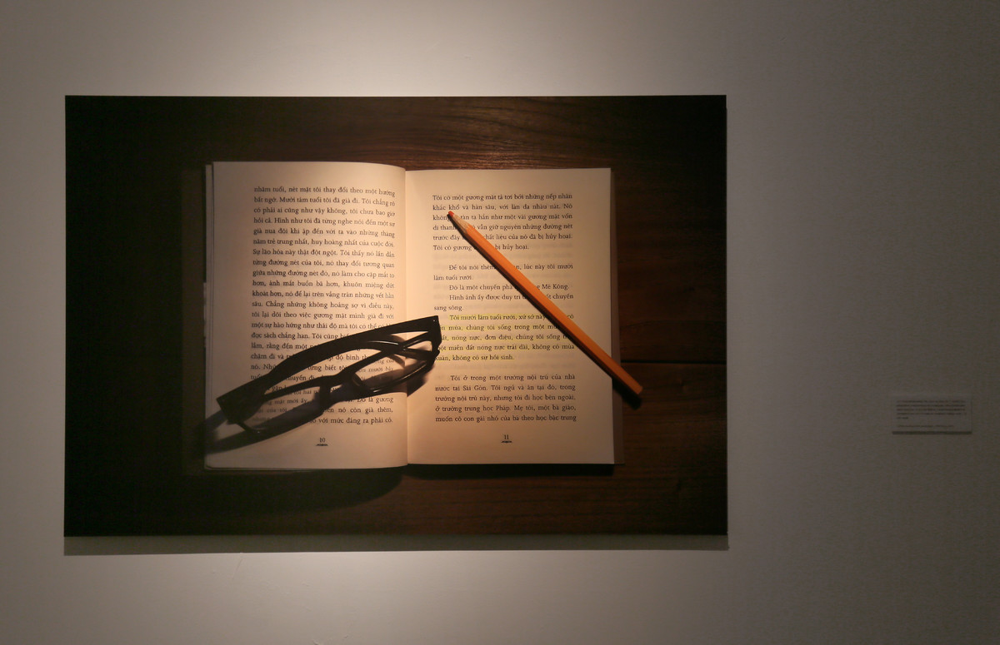

胡志明的风景 | THE LANDSCAPES OF HO CHI MINH

纸上墨水绘画，25x17.5cm，22幅，两段彩色高清影像时长分别为12分41秒和20分41秒，尺寸可变，数字图像微喷到纯棉相纸 120x80cm, 2017
Action, Black ink on paper 25x17.5cm, 22 picture, HD Video 12`41``&20`41``, Variable, Archival inkjet print 120x60cm, 2017
Action, Black ink on paper 25x17.5cm, 22 picture, HD Video 12`41``&20`41``, Variable, Archival inkjet print 120x60cm, 2017
我在越南胡志明市旅行的时候买了一本《情人》，将其中的22段描写当地风景的情节用越南语朗诵出来，邀请一个越南人根据他听到的录音，将这22段风景画出来。
When I visited ho chi minh city in 2015, I bought a Vietnamese edition of L`ament. From the novel L`ament, I found 22 descriptions of the scenery in Saigon (ho chi minh city), which I read aloud in Vietnamese. Then give the recording to a Vietnamese painter and ask him to draw the scenery according to what he heard.
When I visited ho chi minh city in 2015, I bought a Vietnamese edition of L`ament. From the novel L`ament, I found 22 descriptions of the scenery in Saigon (ho chi minh city), which I read aloud in Vietnamese. Then give the recording to a Vietnamese painter and ask him to draw the scenery according to what he heard.
艺术家石玩玩在越南旅行时买了一本《情人》，他将其中二十二段描写风景的情节用越南语朗诵出来，邀请越南人阮维根据他听到的录音，将这二十二段风景画出来。这促成了这里的《胡志明的风景》。
这里不仅是二十二段风景，而且是二十二段二手，甚至是三手四手的风景及其图像。而艺术家最近将其工作简要描述为“不以生产图像为目的的行动和公共艺术实践”。这种纠结的关系也延续性地体现在“马尼拉”、“望京”、“伊斯坦布尔”、“常德”的“诗人”、“少年”、“画家”“卖画”等现实的，至少言语和形象在其中不断成批汹涌而出的实践中。一定有一种情义让人难以割舍这种纠结。而在《胡志明的风景》中，“画家”、“胡志明”、“《情人》”等形象也不断地跳将出来，纷扰牵扯进来的专业、业余、公共的作者们或者读者们。对，这些都是石玩玩自找的“事儿”。有义有情？这一回的《胡志明的风景》，被艺术家搭讪到他的“事儿”的，都有幸暂聚一个以此命名的（艺术）展览。一段关系总要结束，另一段感情总要开始。
——王亚敏
——王亚敏
During a trip to Vietnam Wanwan Shi bought a copy of L’amant. He recited 22 paragraphs of the book in Vietnamese each of which describes the landscapes of Ho Chi Minh. He invited a Vietnamese Duy Nguyen to do 22 drawings according to the record of his recital and thus we present TheLandscapes of Ho Chi Minh.
The 22 images presented here are not only landscapes but also second-hand, third-hand and even fourth-hand landscapes. But the artist describes his practices as ‘action art & public art without the aim of producing images’. This tangled relationship is also reflected in "Manila", "Wangjing", "Istanbul", "Changde"(with "poets", "youth", "painters" and "selling paintings") and other realistic practices, where accents and images were produced on mass. There must be affection and faith to support this entanglement. In The Landscapes of Ho Chi Minh, the images of ‘painter’, ‘Ho Chi Minh’ and ‘lover’, etc. jump out and distract professional, amateur and public writers or readers who are involved in the event. They are all ‘events’ brought on by the artist himself. Affection and faith? In the name of the ‘art’ exhibition of The Landscapes of Ho Chi Minh, all of those who were accosted and involved in the artist’s ‘event’ will meet here. One relationship must be ended, another one must begin.
——Yamin Wang
——Yamin Wang
This summer my friend Stacy asked me if I spoke Vietnamese, and I said yes. She then said a guy named Kris wanted to talk to me. Kris then told me a chinese artist Shi Wanwan wanted me to listen to a voiceclip of him speaking Vietnamese and then draw something based on my interpretation of his voice clip. The interesting part is that he was just learning Vietnamese, and my Vietnamese is very broken as I only speak it once a year with my mother. I agreed despite my my disability to draw, haha. It then turned out that I not only had to draw one drawing, but twenty-two drawings interpreted from 22 voice clips. Personally I found it quite challenging to find time to listen, intepret and draw. There were times when I thought I should just tell Shi that I can't do it because I didn't have time. Today is the opening of the exhibition and Shi Wanwan sent me these pictures and told me people liked my badly drawn sketches. That feels quite rewarding somehow. The biggest challenge is not to agree to do something, but to finish what you agree upon.
——Duy Nguyen
——Duy Nguyen


南京艺术学院美术馆，南京
Art Museum of Nanjing University of the Arts, Nanjing
Art Museum of Nanjing University of the Arts, Nanjing
南京艺术学院美术馆，南京
Art Museum of Nanjing University of the Arts, Nanjing
Art Museum of Nanjing University of the Arts, Nanjing
南京艺术学院美术馆，南京
Art Museum of Nanjing University of the Arts, Nanjing
Art Museum of Nanjing University of the Arts, Nanjing